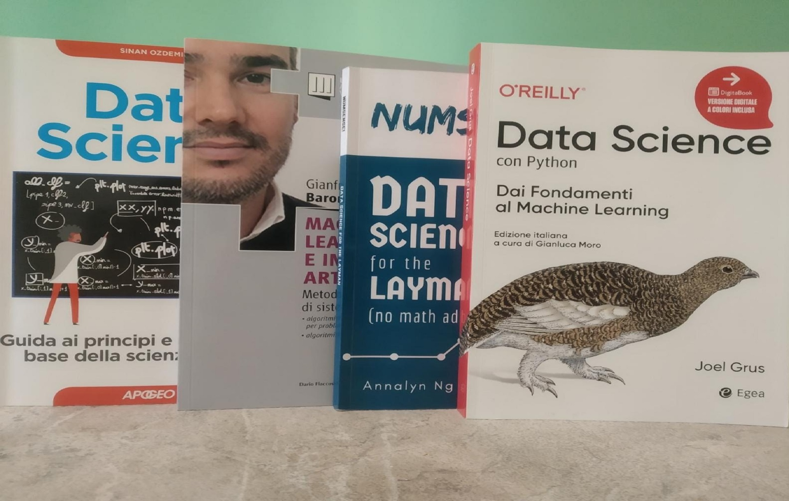

This section contains the books I have read in the professional field and the certifications obtained
Inferenza Statistica 2017, Bruno Chiandotto, Dipartimento Statistica, informatica, Applicazioni "G Parenti" (DISIA), Firenze
Reti di calcolatori. 5° ediz, Tanenbaum, Wetherall
Sistemi operativi. Concetti ed esempi, Silberschatz, Baer Galvin, Gagne
Machine Learning e Intelligenza Artificiale. Metodologie per lo sviluppo di sistemi automatici, Gianfranco Barone
Data science con python. Dai fondamenti al machine learning, Joel Grus
Numsense! Data Science for the Layman, Annalyn Ng, Kenneth Soo
Certifications:
- Data Analyst Pandas Python
- Linux Essential

Sorry, your browser doesn't support embedded videos.
-->
take me home